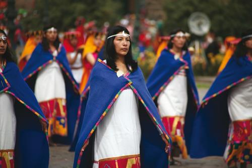
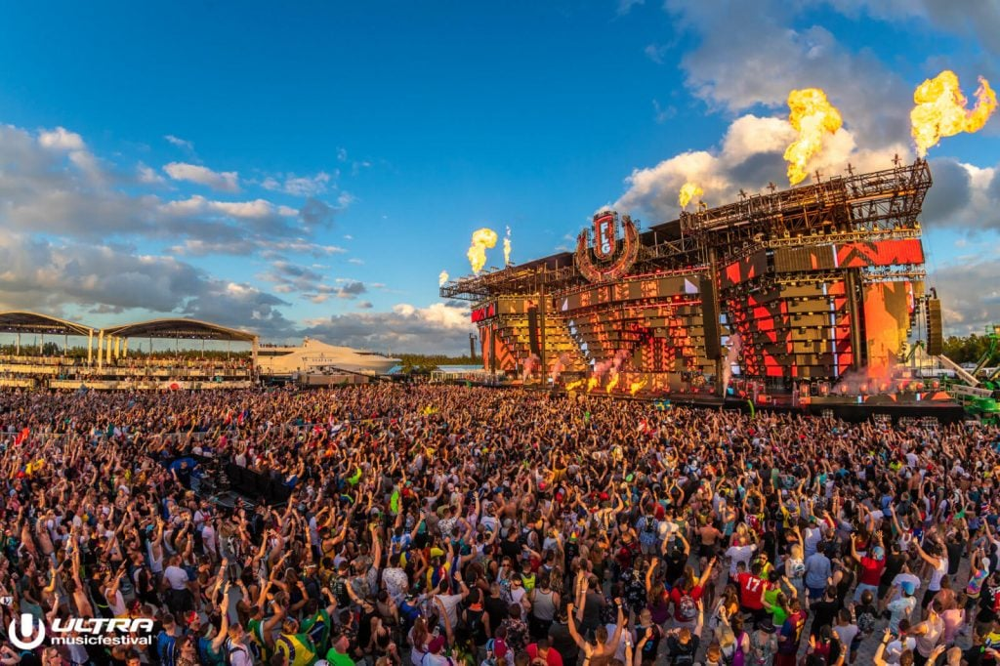
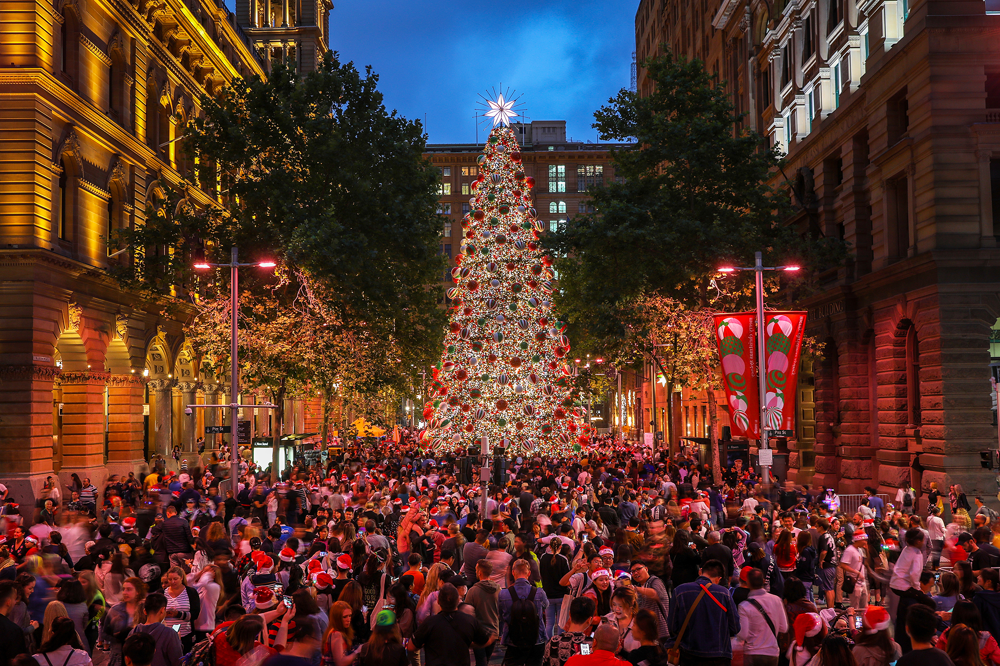

Awsome Festival Around the World

Traditional Festival
Traditional festivals around the world showcase cultural heritage, customs, and rituals. They bring communities together, offering a glimpse into rich traditions through vibrant celebrations, music, dance, and traditional cuisine.
Search 
Musical Festival
Music festivals are energetic gatherings that showcase diverse genres and artists. They bring people together to enjoy live performances, immerse themselves in the music, and create lasting memories.
Search 
Search
Religious Festival
Religious festivals are sacred occasions where communities come together to honor and celebrate their faith. Through rituals, prayers, and ceremonies, these festivals provide a spiritual connection and a time for reflection, unity, and reverence.Search
Indian festivals, celebrated globally, are vibrant and colorful occasions that showcase the rich cultural heritage of India. From Diwali, the festival of lights, to Holi, the festival of colors, these festivities bring communities together to celebrate with music, dance, delicious food, and joyous rituals. Indian festivals are a time to embrace traditions, foster a sense of togetherness, and share the beauty of Indian culture with the world.
Sri Lankan festivals, celebrated worldwide, offer a glimpse into the island nation's vibrant traditions and cultural heritage. From the Sinhala and Tamil New Year to Vesak, these festivals are filled with vibrant processions, traditional music, dance performances, and delicious cuisine. Sri Lankan festivals bring communities together to honor religious and cultural traditions, fostering a sense of unity and showcasing the unique beauty of Sri Lankan culture to the world.
Spanish festivals, celebrated worldwide, exude the passion and vibrancy of Spanish culture. From the lively festivities of La Tomatina to the flamboyant parades of Carnival, these events showcase flamenco music, traditional dances, and delicious cuisine like paella. Spanish festivals create an immersive experience, transporting attendees to the heart of Spain's festive spirit and leaving them with unforgettable memories of joy and celebration.